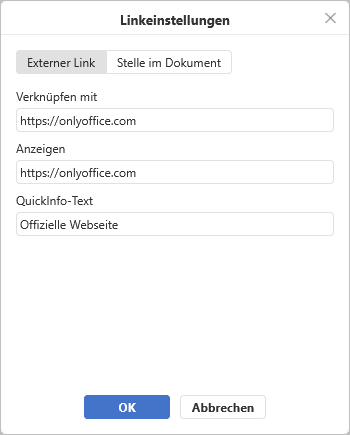
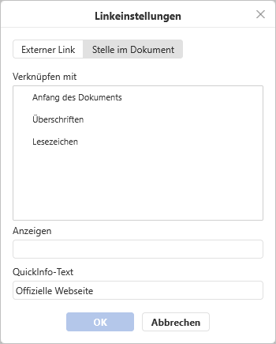

Link einfügen
Um einen Link im Dokumenteneditor hinzuzufügen:
- Wählen Sie das Objekt aus, das Sie als Link anzeigen möchten, z. B. einen Textausschnitt, ein Bild oder eine Gruppe von Objekten.
- Wechseln Sie in der oberen Symbolleiste auf die Registerkarte Einfügen oder Verweise.
- Klicken Sie auf das Symbol Link in der oberen Symbolleiste.
-
Das Fenster Linkeinstellungen wird angezeigt, in dem Sie die Link-Parameter festlegen können:
-
Wählen Sie den gewünschten Linktyp aus:
Verwenden Sie die Option Externer Link und geben Sie eine URL im Format
http://www.example.comin das Feld Verknüpfen mit unten ein, wenn Sie einen Link hinzufügen, der zu einer externen Website führt. Wenn Sie einen Link zu einer lokalen Datei hinzufügen müssen, geben Sie die URL imDatei://Pfad/Dokument.docx(für Windows) oderDatei:///Pfad/Dokument.docx(für macOS und Linux) Format in das Feld Verknüpfen mit unten ein.Der Link
Datei://Pfad/Dokument.docxoderDatei:///Pfad/Dokument.docxkann nur in der Desktop-Version des Editors geöffnet werden. Im Web-Editor können Sie den Link nur hinzufügen, ohne ihn öffnen zu können.
Wenn Sie einen Link einfügen möchten, der zu einer bestimmten Stelle im gleichen Dokument führt, dann wählen Sie die Option Stelle im Dokument, wählen Sie dann eine der vorhandenen Überschriften im Dokumenttext oder eines der zuvor hinzugefügten Lesezeichen aus.

- Anzeigen — geben Sie den klickbaren Text ein, der zu der im oberen Feld angegebenen Webadresse führt.
- QuickInfo-Text — geben Sie einen Text ein, der in einem Dialogfenster angezeigt wird und den Nutzer über den Inhalt des Verweises informiert.
-
Wählen Sie den gewünschten Linktyp aus:
- Klicken Sie auf OK.
Um einen Link hinzuzufügen, können Sie auch die Tastenkombination Strg+K verwenden oder mit der rechten Maustaste auf die Stelle klicken, an der ein Link hinzugefügt werden soll, und im Kontextmenü die Option Link auswählen.
Es ist auch möglich, ein Zeichen, ein Wort, eine Wortverbindung oder einen Textabschnitt mit der Maus oder über die Tastatur auszuwählen. Öffnen Sie anschließend das Menü für die Linkeinstellungen, wie zuvor beschrieben. In diesem Fall erscheint im Feld Anzeigen der ausgewählte Textabschnitt.
Bewegen Sie den Mauszeiger über den hinzugefügten Link, um den QuickInfo anzuzeigen, der den von Ihnen angegebenen Text enthält. Sie können den Link öffnen, indem Sie die Taste STRG drücken und dann auf den Link in Ihrem Dokument klicken.
Um den hinzugefügten Link zu bearbeiten oder zu entfernen, klicken Sie mit der rechten Maustaste auf den Link, wählen Sie dann das Optionsmenü für den Link aus und klicken Sie anschließend auf Link bearbeiten oder Link entfernen.